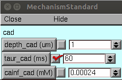

This is the readme for the author's model associated with Supplementary 12 in the paper:
Gidon A, Zolnik TA, Fidzinski P, Bolduan F, Papoutsi A, Poirazi P, Holtkamp M, Vida I, Larkum ME (2020) Dendritic action potentials and computation in human layer 2/3 cortical neurons Science 367:83-87Model usage:
This code was written in and requires NEURON (tested in version 7.4,
7.7) which is freely available
from http://www.neuron.yale.edu
This model was run under the unix/linux and windows 10 operating system.
Proceed as follows:
- Download and expand this archive and compile the mod files located in the "_mod" folder with nrnivmodl ("nrnivmodl _mod" or "nrnivmodl ../_mod" if running in the FigS12 subfolder)).
or for windows double click mosinit.hoc
If you need more help running NEURON on your platform please consult: https://senselab.med.yale.edu/ModelDB/NEURON_DwnldGuide Once the code is running you can "tickle" the taur_cad time constant in the window:  For example, by clicking the check box twice, or by entering a return after the 60, a graph similar to Fig S12 B2 is generated: